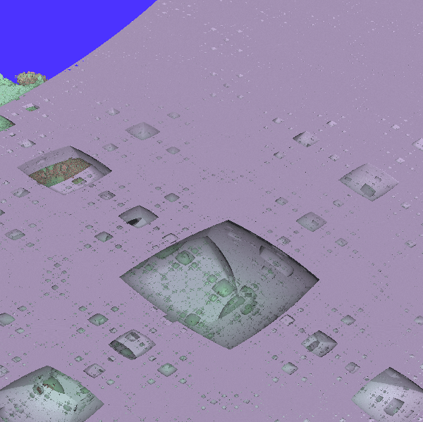
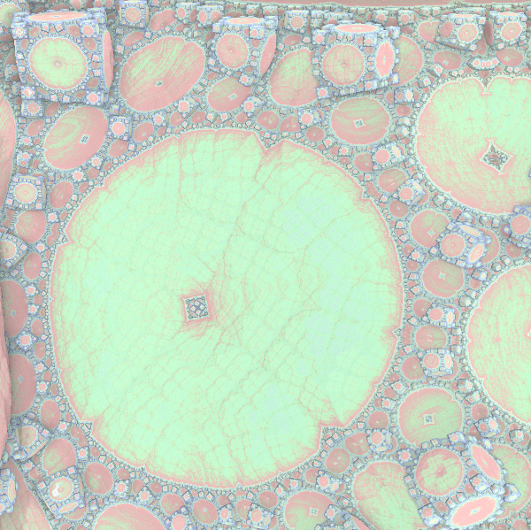

The Mandelbox Set
The Mandelbox set is a mathematical set defined by the iterations of points on a plane with a family of function \( T_\mu \), much like the famous Mandelbrot set after which its name is derived. The set can easily be generalized to any number of dimension and different values for the scale parameter \( \mu \) can lead to a wide range of different patterns. While popular in the fractal art community, it has not yet been formally studied. In this course project, created in the context Winter 2014's offering of PMATH 370 at University of Waterloo, I prove some basic properties of the Mandelbox set and provide a WebGL applet to navigate the 2D and 3D versions of this fractal.
Mandelbox370 Fractal Explorer, requires WebGL-compatible browser and relatively recent (though not neccessarily fast) graphics card. See github for source code.
Background
In 1980, Benoit Mandelbrot generated the first image of the Mandelbrot set while working at IBM. Soon after, in parallel with advances in computing, countless fractal-generating software were written which lead to the development of an entire new genre of art, fractal art. Common example of such fractals include the Mandelbrot and Julia Sets, fractal flames, the Burning Ship, etc.As the field of computer graphics made further advances, many became interested in visualizing three-dimensional fractals. While fractals such as the Sierpenski triangle were easy to generalize, (e.g. using tetrahedra), finding a formula that would create a 3D structure with the complexity of the Mandelbrot was not trivial. Various search attempts are highlighted in Daniel White's website (2008).
The discovery of the Mandelbulb in 2009 by Daniel White and Paul Nylander, a non-trivial 3D fractal, spurred hobbyist research into finding new fractal formulas, traces of which can be found on the fractalforums website. The main focus of this project is on the Mandelbox set found in 2010 by Tom Lowe, which began as research into an iterative form of Sierpenski fractals, continuing here and culminating here. See Tom Lowe's website.
The particular interest of the Mandelbox is that it is the first to introduces some ideas (namely, plane inversion) that form the basis for a type of fractal formula that appear to be highly general, capable of creating well-known fractals (e.g., koch curve) by simple changes in their parameter. This is detailed in the section Kaleidoscopic Fractals.
But first, we need to define the Mandelbox set.
Definitions
The Mandelbox set is similar to the Mandelbrot set. It is defined as the set of points who remain bounded under iteration under some function \( T_\mu \). That function, however, is somewhat more complicated than \( x^2 + c \). It is composed of two subfunctions \( \bfold, \sfold \).Definition (Box Fold): A box fold, or plane inversion is defined as \( \bfold(x) = \begin{cases} -2 - x & x < -1 \\ x & -1 \leq x \leq 1 \\ 2 - x & x > 1 \end{cases} \) when \( x \in \setR \) and \( \bfold(x_1, x_2, ..., x_n) = (\bfold(x_1), \bfold(x_2), ..., \bfold(x_n)) \) for \( \setR^n \).
This function can be thought of as "folding" the plane along the edges of a square centered at (0, 0) with side length 2. Note that the box could have a different size, but the standard Mandelbox set uses length 2, so we restrict our attention to this particular definition of the function.
Definition (Ball Fold): Let \( \vec{x} \in \setR^n \). A circle/sphere/ball fold or inversion is defined as \( \sfold(\vec{x}) = \begin{cases} 4\vec{x} & \norm{\vec{x}} < \frac{1}{2} \\ \vec{x} / \norm{\vec{x}}^2 & \frac{1}{2} < \norm{\vec{x}} < 1 \\ \vec{x} & \norm{\vec{x}} \geq 1 \end{cases} \)
The ball fold transformation expands the inside of a sphere of radius 1. Note that the first case, \( \norm{\vec{x}} < \frac{1}{2} \) is present mostly to prevent the function from "blowing up" for points near \( \vec{0} \). The constant \( \frac{1}{2} \) could be different, we focus our attention on this "default" value and our proofs work for any value < 1. The ball fold transformation is similar to the sphere inversion operations used by [Jos Leys, 2005] to create circle-packing type fractals.
Note that both functions are continuous. These two functions may appear ad-hoc and difficult to understand. Fortunately, Tom Lowe created a short video that allow us to visualize these two operations when operated on a plane.
With this, we can construct the function \( \itfnv(\vec{x}) = \mu \sfold(\bfold(\vec{x})) + \vec{v} \) and are ready to give the definition of the Mandelbox set. The constant \( \mu \) is refered to as the scale parameter of the Mandelbox.
Definition (Mandelbox set): The n-dimensional Mandelbox Set \( \mboxset \) with scale parameter \( \mu \) is defined as \( \mboxset = \{ \vec{v} \in \setR^n\ |\ \iter{\itfnv}{k}(0) \not\to \infty \} \), where \( \itfnv(\vec{x}) = \mu \sfold(\bfold(\vec{x})) + \vec{v} \).
We refer to \( \mboxset, \mu > 0 \) as positive boxes and \( \mboxset, \mu < 0 \) as negative boxes. Furthermore, we can easily obtain a definition of "Juliaboxes".
Definition (Juliabox set): The n-dimensional Juliabox Set \( \jboxset{\vec{c}} \) with scale parameter \( \mu \) with constant \( \vec{c} \) is defined as \( \jboxset{\vec{c}} = \{ \vec{v} \in \setR^n\ |\ \iter{\itfnc}{k}(\vec{v}) \not\to \infty \} \), where \( \itfnc(\vec{x}) = \mu \sfold(\bfold(\vec{x})) + \vec{c} \).
These definitions can be complicated to work with, especially in higher dimensions when the number of components increases. Therefore, it is useful to study \( \itfnv \) as it operates on each component of a vector individually. This works well with \( \bfold \), which operates on each component/dimension independently. For \( \sfold \), this is not the case. However, note that if \( x_k \) is the kth component of \( \vec{x} \), then the kth component of \( \sfold(\vec{x}) \) is \( c \cdot x_k \) for some \( 1 < c < 4 \). We can use such simplifications in most of our proofs.
Thus, in the proofs that follow, I will often use the notations \( \bfold(x), \sfold(x), x \in \setR \) to study the behavior of a single component while working in higher dimensions.
Finally, from the definition of the Mandelbox set, we can easily see that it is symmetric along any axis (it has all the symmetries of a square/cube/box).
Bounds
For the Mandelbrot set, we know that if any point in the orbit exceeds the boundaries of a circle of radius 2 centered at the origin while iterating, then the point will diverge to infinity. This property is particularly useful when rendering the Mandelbrot using escape-time algorithms. We would like to obtain a similar bound for the Mandelbox set.First, we ignore the Mandelbox for \( |\mu| < 1 \). These boxes are not interesting, since none of the points diverge to infinity. To see this, note that \( \norm{\vec{x}} \geq \norm{\bfold(\vec{x})} \), so box fold cannot cause the point to diverge. Sphere fold only increases the value of points inside a sphere of radius 1 by at most a factor of 4, so sphere fold cannot cause the value of points to diverge. Only multiplication by \( \mu \) can (adding the constant is offset by the fact that \( |\mu| < 1 \).
2D Mandelbox, scale -1.41
Using the applet to render 2D mandelboxes for \( \mu < -1 \), we notice that all boxes appear to have length 4. This can be proven.
Theorem (Bounds for negative boxes): Let \( \mboxset \) be the Mandelbox Set in \( \mathbb{R}^n \) with scale parameter \( \mu < -1 \). Let \(\ \vec{v} = (v_1,...v_n) \in \mathbb{R}^n \). If \( |\max(v_1,...,v_n)| > 2 \), then \( \vec{v} \not\in M_{n,\mu} \).
Proof : Suppose \( x = \max(v_1,...,v_n) \). We start by considering the case \( x > 2 \).
The first iteration will involve a box fold, so we have that \( F_{box}(x) = 2-x, F_{ball}(F_{box}(x)) = c(2-x), c > 1 \). Both \( \mu \) and \( c(2-x) \) are negative, so \( \mu c(2-x) > 0 \). Therefore we have : \[ \itfnv(x) = \mu F_{ball}(F_{box}(x)) + x = \mu c(2-x) + x > x \] Similarly, \( \itfnv^{[2]}(x) = \itfnv(\itfnv(x)) > \itfnv(x) \) and generally, \(\itfnv^{[n+1]}(x) > \itfnv^{[n]}(x) \).
Thus, \( \{\itfnv^{[n]}(x) \} \) is an monotonically increasing sequence. It is also not bounded since \( \itfnv(x) > x \) is true for all \( x > 2 \). Hence, \( \itfnv^{[n]}(x) \to \infty \) so \( \itfnv^{[n]}(\vec{v}) \to \infty \) also which by definition means \( \vec{v} \not\in \mboxset \).
The proof for the case where \( x < -2 \) is similar. Now, \( F_{box}(x) = -2-x > 0 \) so \( \itfnv(x) = \mu F_{ball}(F_{box}(x)) + x < x \) and we get that \( \{\itfnv^{[n]}(x) \} \) is an unbounded monotonically decreasing sequence.
Since in both cases, \( \itfnv^{[n]}(x) \to -\infty \ \text{or} \ +\infty \), we must have that \( |\vec{v}| \to \infty \Rightarrow \vec{v} \not\in M_{n,\mu} \).
\( \blacksquare \)
Corollary: For \( \mu < -1 \), the smallest box that contains every point in \( M_{n,\mu} \) is \[ \underbrace{[-2,2] \times [-2,2] ... \times [-2,2]}_n \]Proof : To show this, we simply need to find a point \( \vec{v} \in M_{n,\mu} \) on each boundary of that box. Consider \( \vec{v} = (2, 0, ..., 0) \). Then \[ \begin{align*} \itfnv(\vec{v}) &= \mu F_{ball}(F_{box}((2, 0, ..., 0)) + \vec{v} \\ &= \mu F_{ball}((0, 0, ..., 0)) + \vec{v} \\ &= \mu(0, 0, ..., 0) + \vec{v} = \vec{v} \end{align*} \] So \( \vec{v} \) is a fixed point, which is bounded. Similarly, every other point at the center of every face of the box is a fixed point.
\( \blacksquare \)
2D Mandelbox, scale 2
For positive boxes, the bounds on the box vary with the scale parameter \( \mu \). We can also derive those bounds.
Theorem (Bounds for positive boxes): Let \( M_{n,\mu} \) be the Mandelbox Set in \( \mathbb{R}^n \) with scale parameter \( \mu > 1 \). Let \(\ \vec{v} = (v_1,...v_n) \in \mathbb{R}^n \). If \( |\max(v_1,...,v_n)| > \frac{2(\mu+1)}{\mu-1} \), then \( \vec{v} \not\in M_{n,\mu} \).Proof : Again, suppose \( x = \max(v_1,...,v_n) \) and begin with the case \( x > \frac{2(\mu+1)}{\mu-1} \). First, notice \( \frac{2(\mu+1)}{\mu-1} > 2 \) so the first iteration will involve a box fold : \[ \begin{align*} \itfnv(x) &= \mu F_{ball}(F_{box}(x)) + x \\ &= \mu F_{ball}(2-x) + x \\ &< \mu(2-x) + x & \text{since } (2-x) \text{ is negative} \\ &= 2\mu - x(\mu-1) & (1) \\ &< 2\mu - 2(\mu+1) & \text{by assumption } x > \frac{2(\mu+1)}{\mu-1} \\ & = -2 \end{align*} \] Since \( \itfnv(x) < -2 \), the second iteration \( \itfnv(\itfnv(x)) \) will also involve a box fold on the other side. \[ \begin{align*} \itfnv(x)^{[2]} &= \mu F_{ball}(F_{box}(\itfnv(x))) + x \\ &= \mu F_{ball}(-2-\itfnv(x)) + x \\ &> \mu(-2-\itfnv(x)) + x & \text{since }-2-\itfnv(x) \text{ is positive} \\ &> \mu(-2-(2\mu - x(\mu-1))) + x & \text{from } (1) \\ &= -2\mu-\mu(2\mu - x(\mu-1)) + x \\ &= -2\mu - 2\mu^2 + x\mu(\mu-1) + x \\ &= -2\mu(\mu+1) + x(\mu^2-\mu+1) \\ &> -x\mu(\mu-1) + x(\mu^2-\mu+1) & \text{by assumption } x > \frac{2(\mu+1)}{\mu-1} \\ &=x(-\mu^2+\mu+\mu^2-\mu+1) = x \end{align*} \] Hence, if \(x > \frac{2(\mu+1)}{\mu-1} \), \( \itfnv(x)^{[2]}(x) > x \). Using a similar method, we can also get that if \(x < -\frac{2(\mu+1)}{\mu-1} \), \( \itfnv(x)^{[2]}(x) < x \). Thus, by combining the two, we see that \( \{|\itfnv^{[n]}(x)| \} \) is a monotonically increasing sequence, and cannot be bounded.
Hence \( |\vec{v}| \to \infty \Rightarrow \vec{v} \not\in M_{n,\mu} \) as needed.
\( \blacksquare \)
Corollary: For \( 1 < \mu \leq 4\sqrt{n} + 1 \), the smallest box that contains every point in \( M_{n,\mu} \) is \[ \underbrace{[-\frac{2(\mu+1)}{\mu-1},\frac{2(\mu+1)}{\mu-1}] \times [-\frac{2(\mu+1)}{\mu-1},\frac{2(\mu+1)}{\mu-1}] ... \times [-\frac{2(\mu+1)}{\mu-1},\frac{2(\mu+1)}{\mu-1}]}_n \]Proof : We show this by proving that the corners of this box are eventually periodic points of period 2. We do this for the corner when all the components are positive - the proof is the same for the other corners. More specifically, we show that if \( \vec{v} = (\frac{2(\mu+1)}{\mu-1}, ..., \frac{2(\mu+1)}{\mu-1}) \), then \( \{ \iter{\itfnv}{3}(\vec{0}), \iter{\itfnv}{1}(\vec{0}) \} \) is a two-cycle.
Note that \( \itfnv(0) = \frac{2(\mu+1)}{\mu-1} \). Then, \[ \begin{align} \iter{\itfnv}{2}(0) &= \itfnv(\frac{2(\mu+1)}{\mu-1}) \\ &= \mu \sfold(\bfold(\frac{2(\mu+1)}{\mu-1})) + \frac{2(\mu+1)}{\mu-1} \\ &= \mu \sfold(2 - \frac{2(\mu+1)}{\mu-1}) + \frac{2(\mu+1)}{\mu-1} & \text{since } \frac{2(\mu+1)}{\mu-1} > 1 \\ &= \mu \sfold(\frac{2(\mu-1)}{\mu-1} - \frac{2(\mu+1)}{\mu-1}) + \frac{2(\mu+1)}{\mu-1} \\ &= \mu \sfold(\frac{-4}{\mu-1}) + \frac{2(\mu+1)}{\mu-1} \\ &= \frac{-4 \mu}{\mu-1} + \frac{2(\mu+1)}{\mu-1} & \text{no ball fold since } \mu \leq 4\sqrt{n} + 1 \\ &= \frac{-4\mu + 2(\mu+1)}{\mu-1} \\ &= \frac{2(-\mu+1)}{\mu-1} = -2 \\ \iter{\itfnv}{3}(0) &= \mu \sfold(\bfold(-2)) + \frac{2(\mu+1)}{\mu-1} \\ &= \mu \sfold(0) + \frac{2(\mu+1)}{\mu-1} \\ &= \frac{2(\mu+1)}{\mu-1} = \itfnv(0) \\ \end{align} \] Hence, \( \vec{v} \in \mboxset \).
\( \blacksquare \)
Conjecture: For \( 4\sqrt{n} + 1 < \mu \), \( \mboxset = \{ 0 \} \).
2D Mandelbox corners, scale 5.32 and 6.95
That is, if the scale parameter is a enough large number, then the only point in the Mandelbox is the origin. With lower values of \( \mu \), we can still see some dust in the corners, which disappears when \( \mu > 4\sqrt{2} + 1 \approx 6.65 \)
Dimension
We would like to be able to measure the dimension of this set for various values of \( \mu \). Unfortunately, this is rather difficult and I don't know how to approach this problem in the general case.
2D Mandelbox, scale 1.75
However, we can observe that for small values of \( \mu \), the center of the box appears to be full. This gives us an easy way to get the dimension, since the dimension of the box must then be equal to the dimension of the center area.
Theorem (Interior of positive boxes): For \( 1 < \mu < 2 \), if \( \vec{v} \in \underbrace{[-k, k] \times [-k, k] \times ... \times [-k, k]}_n \) where \( k = \frac{2(\mu^2-\mu-2)}{1-\mu} \), then \( \vec{v} \in M_{n,\mu} \).
Proof : In this proof, we want show that the orbit of points in a cube centered at (0, 0) of some dimension under iteration by \( \itfnv \) is bounded. Again, it is sufficient to look at the behavior of a single component of a point \( \vec{v} \), say \( x_0 \).
We begin by looking at the range of \( \iter{\itfnx}{n}(I) \) for some interval \( I = [a, b] \).
\( \newcommand{\since}{\quad\text{since}\ } (1)\ \itfnx([0,1]) \subseteq [x_0, 2\mu+x_0] \since \bfold([0,1]) = [0,1], \sfold([0,1]) = [0,2] \\ (2)\ \itfnx([1,2]) \subseteq [x_0, 2\mu+x_0] \since \bfold([1,2]) = [0,1], \sfold([0,1]) = [0,2] \\ (3)\ \itfnx([2,3]) \subseteq [-2\mu+x_0, x_0] \since \bfold([2,3]) = [-1,0], \sfold([-1,0]) = [-2,0] \\ (4)\ \itfnx([3,b]) \subseteq [\mu(2-b)+x_0, -\mu+x_0], b > 3 \since \bfold([3,b]) = [2-b,-1], \sfold([2-b,-1]) = [2-b,-1] \\ (5)\ \itfnx([-1,0]) \subseteq [-2\mu+x_0, x_0] \since \bfold([-1,0]) = [-1,0], \sfold([-1,0]) = [-2,0] \\ (6)\ \itfnx([-2,-1]) \subseteq [-2\mu+x_0, x_0] \since \bfold([-2,-1]) = [-1,0], \sfold([-1,0]) = [-2,0] \\ (7)\ \itfnx([-3,-2]) \subseteq [x_0, 2\mu+x_0] \since \bfold([-3,-2]) = [0,1], \sfold([0,1]) = [0,2] \\ (8)\ \itfnx([a,-3]) \subseteq [\mu+x_0, \mu(-2-a)+x_0], a < -3 \since \bfold([a,-3]) = [1,-2-a], \sfold([1,-2-a]) = [1,-2-a] \)
In order to show that we have points inside the Mandelbox, we need to find initial values \( x_0 \) such that the orbit \( \orbit{\itfnx(x_0)} \) is bounded.
Suppose \( x_0 > 0 \). Notice that in the ranges \( (1)-(8) \), the maximum value of \( \itfnx(I) \) is \( 2\mu+x_0 \) except for \( (8) \) which has maximum value \( \mu(-2-a)+x_0 \). In order for \( \iter{\itfnx}{n} \) to diverge, we need \( \iter{\itfnx}{n}(x_0) \in [a, -3] \) for some \( n \), so we need \( a \) such that \[ \begin{align*} & \mu(-2-a)+x_0 &>& 2\mu+x_0 \\ \implies & -2\mu-\mu a+x_0 &>& 2\mu+x_0 \\ \implies & \mu a &>& 4\mu \\ \implies & \iter{\itfnx}{n}(x_0) = a &<& -4 \end{align*} \] The ranges \( (1)-(8) \) have minimum value \( -2\mu+x_0 \) except for \( (4) \) which has minimum value \( \mu(2-b)+x_0 \). Thus, in order to get \( \iter{\itfnx}{n}(x_0) < -4 \), we need \( \iter{\itfnx}{n-1}(x_0) \in [3, b] \) so we need \( b \) such that \[ \begin{align*} & \mu(2-b)+x_0 &<& \iter{\itfnx}{n}(x_0) < -4 \\ \implies & 2\mu-\mu b+x_0 &<& -4 \\ \implies & \mu b &>& 2\mu+x_0+4 \\ \implies & b &> & 2 + \frac{x_0+4}{\mu} \end{align*} \] However, note that since the iteration always starts at \( x_0 \), cases \( (4), (8) \) will never occur if the required value \( 2 + \frac{x_0+4}{\mu} \) is larger than the maximum value \( 2\mu+x_0 \) of the remaining cases. Therefore the orbit \( \orbit{\itfnx(x_0)} \) will be bounded by \( 2\mu+x_0 \) if \[ \begin{align*} & 2 + \frac{x_0+4}{\mu} &>& 2\mu+x_0 \\ \implies & 2\mu+x_0+4 &>& 2\mu^2+x_0\mu \\ \implies & x_0-x_0\mu &>& 2\mu^2-2\mu-4 \\ \implies & x_0(1-\mu) &>& 2(\mu^2-\mu-2) \\ \implies & x_0 &<& 2\frac{\mu^2-\mu-2}{1-\mu} \quad \text{note sign inversion since } 1-\mu < 0 \end{align*} \] This proves that whenever \( 0 <= x_0 < 2\frac{\mu^2-\mu-2}{1-\mu} \) for all components in the point, \( p \) will have bounded orbit and be in \( \mboxset \). A similar proof will yield that when \( -2\frac{\mu^2-\mu-2}{1-\mu} < x_0 <= 0 \) for all components, the point will also be in \( \mboxset \).
This shows there exist a n-cube of half-length \( 2\frac{\mu^2-\mu-2}{1-\mu} \) centered at \( (0, 0) \) where every point in the cube is in \( \mboxset, 1 < \mu < 2 \).
\( \blacksquare \)
Corollary: If \( 1 < \mu < 2 \), then \( \mboxset \) has box-counting dimension \( n \).Proof : The n-cube in the middle has box-counting dimension \( n \).
\( \blacksquare \)
2D Mandelbox, scale -1.61
For negative boxes, we can also observe that for some values of \( \mu \), there exists a solid interior.
Theorem (Interior of negative boxes): For \( -2 < \mu < -1 \), if \( \vec{v} \in \underbrace{[-k, k] \times [-k, k] \times ... \times [-k, k]}_n \) where \( k = 4+2\mu \), then \( \vec{v} \in M_{n,\mu} \).
The proof is similar to the one for the interior of positive boxes. First we look at the range of \( \iter{\itfnx}{n}(I) \) for some interval \( I = [a, b] \), which is just the reverse of what we had previously.
\( (1)\ \itfnx([0,1]) \subseteq [2\mu+x_0, x_0] \\ (2)\ \itfnx([1,2]) \subseteq [2\mu+x_0, x_0] \\ (3)\ \itfnx([2,3]) \subseteq [x_0, -2\mu+x_0] \\ (4)\ \itfnx([3,b]) \subseteq [-\mu+x_0, \mu(2-b)+x_0], b > 3 \\ (5)\ \itfnx([-1,0]) \subseteq [x_0, -2\mu+x_0] \\ (6)\ \itfnx([-2,-1]) \subseteq [x_0, -2\mu+x_0] \\ (7)\ \itfnx([-3,-2]) \subseteq [2\mu+x_0, x_0] \\ (8)\ \itfnx([a,-3]) \subseteq [\mu(-2-a)+x_0, \mu+x_0], a < -3 \)
Again, we look for initial values \( x_0 \) such that the orbit \( \orbit{\itfnx(x_0)} \) is bounded. Suppose \( x_0 > 0 \). Notice that the maximum value of \( \itfnx(I) \) is \( -2\mu+x_0 \) except for \( (4) \) which has maximum value \( \mu(2-b)+x_0 \). To get divergence, we need \[ \begin{align*} & \mu(2-b)+x_0 &>& b \\ \implies & 2\mu-\mu b+x_0 &>& b \\ \implies & b+\mu b &<& 2\mu+x_0 \\ \implies & b(1+\mu) &<& 2\mu+x_0 \\ \implies & b &>& \frac{2\mu+x_0}{1+\mu} \quad \text{sign inversion since } 1+\mu < 0 \end{align*} \] So know from the previous theorem on the bounds on negative boxes that we need \( x_0 < 2 \) for the point to be in \( \mboxset \). Therefore, we can only hit case \( (4) \) if after \( n \) iteration, \( \iter{\itfnx}{n}(x_0) > \frac{2\mu+x_0}{1+\mu} \). However, we know that in cases other than \( (4) \), the maximum value is \( -2\mu+x_0 \). Hence this will never happen if \[ \begin{align*} & -2\mu+x_0 &<& \frac{2\mu+x_0}{1+\mu} \\ \implies & (1+\mu)(-2\mu+x_0) &>& 2\mu+x_0 \quad \text{sign inversion since } 1+\mu < 0 \\ \implies & -2\mu+x_0-2\mu^2+\mu x_0 b &>& 2\mu+x_0 \\ \implies & -2\mu^2+\mu x_0 &>& 4\mu \\ \implies & -2\mu+x_0 &<& 4 \quad \text{sign inversion since } \mu < 0 \\ \implies & x_0 &<& 4+2\mu \end{align*} \] This proves that whenever \( 0 <= x_0 < 4+2\mu \) for all components in the point, \( p \) will have bounded orbit and be in \( \mboxset \). A similar proof will yield that when \( -(4+2\mu) < x_0 <= 0 \) for all components, the point will also be in \( \mboxset \).
Hence there exist a n-cube of half-length \( 4+2\mu \) centered at \( (0, 0) \) where every point in the cube is in \( \mboxset, -2 < \mu < -1 \).
\( \blacksquare \)
Corollary: If \( -2 < \mu < -1 \), then \( \mboxset \) has box-counting dimension \( n \).Proof : The n-cube in the middle has box-counting dimension \( n \).
\( \blacksquare \)
Conjecture: For \( |\mu| > 2 \), the Mandelbox set is totally disconnected (dust-like).
2D Mandelbox zoom, scale 3, 8 iterations
Applet
As with most fractals, the fun part is exploring it. Hence, I have created a not-subtly titled Mandelbox370 WebGL applet to do just that. The source code, along with the rest of this website, can be found on Github.

Mandelbox370 Fractal Explorer. Interesting shapes can be found inside, such as this monkey helmet.
Browser notes: This applet uses WebGL and thus, requires a WebGL-compatible browser. This includes Chrome v33 or higher. On Windows, Firefox (as of v28) will take over a minute to compile the shaders and freeze in the meantime. I can't get it to work on IE 11 yet and it is not tested on other browsers.
Graphics notes: Unsurprisingly, a raytraced 3D fractal is quite graphics-intensive. On default parameters, a regular ultrabook integrated intel chip (e.g., HD 3000) should be able to run this at a reasonable framerate, but a dedicated graphics card is recommended. The graphics card does need to be relatively new (preferably 2012+, Sandy Bridge HD 2000 is too old for instance) - raytracing isn't a typical use of pixel shaders and falls more into GPGPU domain.
Mathematics notes: The 2D view represents the 2D mandelbox based on the number of iterations before the orbit escapes and black represents points which do not escape, which is an accurate representation of the fractal. However, the 3D fractal is not generated straight from the definition and uses an approximation with unproven accuracy. The 3D renders are to be interpreted with a grain of salt.
Some of the shader code is recycled from one of my earlier 3D fractal project.
Usage Guide
(1) The 3D view allows you to navigate the 3D Mandelbox set. The red dot in the center represents the anchor of rotation. Initially, it is centered at the origin, but you can double-click anywhere on the fractal to change the anchor. This is useful for navigating specific parts of the fractal - e.g., the inside. The blue plane that cuts through the Mandelbox is the slicing plane, which renders a 2D Mandelbox in (4).
(2) The sliders allow you to adjust various parameters. The number of iterations controls the amount of detail on the fractal. For the 3D view, this usually only needs to be increased around \( \mu = -1.5 \). The Scale Factor is the value of \( \mu \). The Slice Location controls the (blue) slicing plane. The accuracy controls the amount of detail in the 3D render. Adjust only as you zoom in. The more accurate the fractal, the most foam/dust-like and the more light it traps. Increasing it too much will cause the fractal to be completely black when zoomed out.
(3) View Slicing Plane and View Anchor are there for convenience. View Juliabox changes the 3D view to Juliabox Mode. The 2D view stays in Mandelbox Mode and a red dot appears allowing you to select the constant \( c \) for the Juliabox (along with the slicing plane). View Color adds some color loosely based on escape-time, which can be pretty sometimes and adds contrast but really doesn't mean anything.
(4) The 2D view represents a slice of the 3D Mandelbox. It is rendered using escape-time coloring, and black dots represents points in the set. Can zoom in and pan.
Rendering Algorithm
Rendering the 2D Mandelbox is rather trivial and is done using the same techniques as every other 2D fractal. It gets more complex as we get to 3D - if we want real-time rendering while still having sufficient details on the surface of the fractal, we can't compute the whole fractal with voxels. Although this was shown to be possible with Octrees in [Crassin et al., 2009], implementing voxel rendering on the GPU is very complicated.
Fortunately, an approach pioneered in [Hart et al., 1989] which is commonly refered to nowadays as distance estimation allows a speedy, real-time implementation. The idea behind this approach is to find a function \( d(\vec{v}) \) that gives an estimate of the distance to the closest point in \( \mboxset \) from \( \vec{v} \not\in \mboxset \).
How might we find such a function? The idea is similar to the approach used for smooth coloring on the Mandelbrot [Barrallo and al., 1999]. The observation is that points closer to the fractal will take longer to escape to infinity. Alternatively, the further a point \( \vec{v} \) is to the fractal, the farther \( \iter{T_\mu}{n}(\vec{v}) \) will be. For the Mandelbox, the formulas commonly used are used mostly because they happen to look good. Mikael Hvidtfeldt makes some attempts at providing an informal derivation of why the formulas would work, but I think there's still a lot of research to be done in the area.
However, suppose we do have such a function. How can we use it for rendering?

The picture above shows raytracing using distance estimation. More precisely, we are using raymarching. If we know the distance to the closest point on the fractal, we can always march the ray forward by that distance. We do this repeatedly until the ray is within \( \epsilon \) of the fractal, in which case we stop. We also set a timeout, a maximum number of steps to take.
This also gives us an easy way to shade the fractal without resorting to complicated shading or global illumination techiques. We simply use the number of steps taken before reaching \( \epsilon \). This works because the number of steps taken roughly correlates with how much "stuff" is in the way blocking light. This does, however, generate some artifacts along the edges of the fractal.
Kaleidoscopic Fractals (and future work)
The Mandelbox Temple
In the introduction, I alluded to the idea that the Mandelbox has some interesting properties that allow it to be a highly "general" fractal. Indeed, we can observe a large variety of different shapes by simple changes of \( \mu \). Of particular interest is the Mandelbox at \( \mu = -1.5 \).
Koch Snowflake, Sierpenski
 
Menger Sponge, Circle Packing
We see that, embedded in the -1.5 Mandelbox are simpler, well-known fractals. Properly rendered pictures by Tom Lowe and Miqel provides even more shapes (fibonacci trees, cantor dust, L-system, etc).
Only a few months after the discovery of the Mandelbox, fractal artist "knighty" took the idea of the Mandelbox's box fold and changed the symmetry planes in relation to regular polyhedra. This allowed the generation of sierpenski-like dodecahedron, and all forms of regular fractals.
Two examples of Kaleidoscopic IFS fractals from fractalforums.
A year later, fractal artist Kali changed the Mandelbox formula to \( K(\vec{v}) = abs(\vec{v})/\norm{\vec{v}} + \vec{c} \) where \( abs \) is applied component-wise.
Kali's fractal.
While the set itself is not very interesting, its "Julia" versions are, again, a highly generalized fractal.
Kali's fractal, "Julia" mode.
Why do the Mandelbox and these Kaleidoscopic fractals generate or mimic so many others? As Tom Lowe describes, the formula of the Mandelbox scales, translates and rotates points around the plane (rotation happens after adding the constant \( \vec{c} \)). This corresponds to how most fractals are generated. To some extent, the parameters of the Mandelbox control the amount of scaling, translation and rotation that occurs.
Hence my interest in these fractal systems. I think it would be very interesting for these fractal systems to receive further mathematical research, so we can deepen our understanding on how Kaleidoscopic fractals generate other fractals.
References
IBM. Fractal Geometry. http://www-03.ibm.com/ibm/history/ibm100/us/en/icons/fractal/ Accessed 2014 March 23.White, Daniel. The Mystery of the REAL, 3D Mandelbrot Fractal. March 2008. http://www.skytopia.com/project/fractal/mandelbrot.html Accessed 2014 March 23.
Aron, Jacob. The Mandelbulb : First 'True' 3D Image of Famous Fractal. November 2009. http://www.newscientist.com/article/dn18171-the-mandelbulb-first-true-3d-image-of-famous-fractal.html Accessed 2014 March 23.
Lowe, Tom. What is the Mandelbox. https://sites.google.com/site/mandelbox/what-is-a-mandelbox Accessed 2014 March 23.
Hvidtfeldt, Mikael. Distance Estimated 3D Fractals. http://blog.hvidtfeldts.net/index.php/2011/06/distance-estimated-3d-fractals-part-i/ Accessed 2014 March 23.
Leys, Jos. Sphere Inversion Fractals. Computer and Graphics, Volume 29-3, June, 2005.
Miquel. The Mandelbox Fractal: A New Landscape of Architectural & Organic Qualities. http://www.miqel.com/fractals_math_patterns/mandelbox_3d_fractal.html Accessed 2014 March 23.
Hart, C. John et al. Ray Tracing Deterministic 3-D Fractals. Computer Graphics, Volume 23-3, July 1989.
Crassin, Cyril et al. GigaVoxels: Ray-Guided Streaming for Efficient and Detailed Voxel Rendering. Proceedings of the 2009 symposium on Interactive 3D graphics and games.
Barrallo, J., Jones, Damien M. Coloring Algorithms for Dynamical Systems in the Complex Plane. The University of the Basque Country
PMATH370 Lecture Notes, Kevin Hare. University of Waterloo, Winter 2014.
The artists on http://www.fractalforums.com/
Typesetting using MathJax.
Sticky menu using StickyJS.
Ambient occlusion rendering borrowed from rrrola's Boxplorer (which is also available in virtual reality mode for Occulus Rift, go check it out!).
Deviantart for inspiration - there are mindblowing Mandelbox renders out there! In comparison, what you see on my applet are like 1980s fractals.